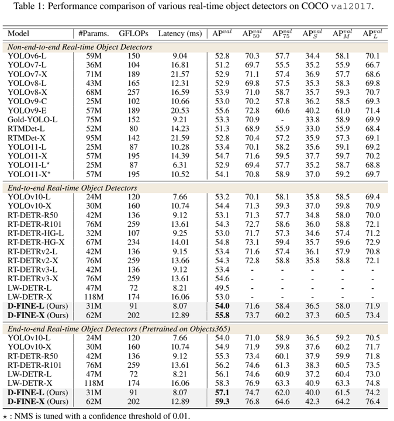

论文阅读五：D-FINE：将DETRS中的回归任务重新定义为细粒度分布细化
摘要
我们介绍了D-FINE，这是一种强大的实时对象检测器，通过在DETR模型中重新定义边界框回归任务，实现了出色的定位精度。D-FINE包括两个关键组成部分：细粒度分布细化（FDR）和全局最优定位自蒸馏（GO-LSD）。FDR将回归过程从预测固定坐标转换为迭代细化概率分布，提供了一种细粒度的中间表示，显著提高了定位精度。GOLSD是一种双向优化策略，通过自蒸馏将定位知识从精细分布转移到较浅层，同时简化了较深层的残差预测任务。此外，D-FINE在计算密集型模块和操作中采用了轻量级优化，在速度和精度之间实现了更好的平衡。具体来说，D-FINE-L/X在NVIDIA T4 GPU上以124/78 FPS的速度在COCO数据集上实现了54.0%/55.8%的AP。在Objects365上进行预训练时，D-FINE-L/X的AP达到57.1%/59.3%，超过了所有现有的实时检测器。此外，我们的方法显著提高了各种DETR模型的性能，AP高达5.3%，额外参数和训练成本可以忽略不计。我们的代码和预训练模型：https://github.com/Peterande/D-FINE 。
引言
在各种应用中，对实时物体检测的需求一直在增加（Arani等人，2022）。最具影响力的实时检测器是YOLO系列（Redmon等人，2016a；Wang等人，2023a；b；Glenn，2023；Wang&Liao，2024；Wang等人，2024a；Glenn，2024），因其高效性和强大的群落生态系统而得到广泛认可。作为强大的竞争对手，检测Transformer（DETR）（Carion等人，2020；Zhu等人，2020，Liu等人，2021；Li等人，2022；Zhang等人，2022）因其基于Transformer的架构而具有明显的优势，该架构允许全局上下文建模和直接集预测，而不依赖于非最大抑制（NMS）和锚框。然而，它们经常受到高延迟和计算需求的阻碍。RT-DETR（赵等人，2024）通过开发实时变体来解决这些限制，为YOLO检测器提供端到端的替代方案。此外，LW-DETR（Chen等人，2024）表明，DETR可以实现比YOLO更高的性能上限，特别是在Objects365等大规模数据集上训练时（Shao等人，2019）。
尽管在实时物体检测方面取得了实质性进展，但一些未解决的问题仍然限制了检测器的性能。一个关键的挑战是边界框回归的公式化。大多数检测器通过回归固定坐标来预测边界框，将边缘视为狄拉克δ分布建模的精确值（Liu等人，2016；Ren等人，2015；Tian等人，2019；Lyu等人，2022）。虽然简单明了，但这种方法无法建模定位的不确定性。因此，模型仅限于使用L1损失和IoU损失，这为独立调整每个边缘提供了不足的指导（Girshick，2015）。这使得优化过程对小的坐标变化很敏感，导致收敛缓慢和性能欠佳。尽管像GFocal（Li等人，2020；2021）这样的方法通过概率分布来解决不确定性，但它们仍然受到锚依赖性、粗略定位和缺乏迭代细化的限制。另一个挑战在于最大限度地提高实时检测器的效率，这些检测器受到有限的计算和参数预算的限制，无法保持速度。知识蒸馏（KD）是一种有前景的解决方案，可以将知识从较大的教师转移到较小的学生身上，在不增加成本的情况下提高绩效（Hinton等人，2015）。然而，传统的KD方法，如Logit Mimicking和Feature Imitation，已被证明对检测任务效率低下，甚至可能导致最先进模型的性能下降（Zheng等人，2022）。相比之下，定位蒸馏（LD）在检测方面显示出更好的结果。然而，由于LD的大量训练开销和与无锚检测器的不兼容性，集成LD仍然具有挑战性。
为了解决这些问题，我们提出了D-FINE，这是一种新型的实时对象检测器，它重新定义了边界框回归，并引入了一种有效的自蒸馏策略。我们的方法解决了固定坐标回归中难以优化的问题：无法对定位不确定性进行建模，以及需要以较低的训练成本进行有效的蒸馏。我们引入细粒度分布细化（FDR）将边界框回归从预测固定坐标转换为建模概率分布，提供更细粒度的中间表示。FDR以残差方式迭代地细化这些分布，允许逐步进行更精细的调整并提高定位精度。认识到较深层通过在概率分布中捕获更丰富的定位信息来产生更准确的预测，我们引入了全局最优定位自蒸馏（GO-LSD）。GO-LSD将定位知识从较深层转移到较浅层，而额外的训练成本可以忽略不计。通过将较浅层的预测与后期层的精确输出对齐，该模型学会了产生更好的早期调整，加速了收敛并提高了整体性能。此外，我们简化了现有实时DETR架构中计算密集型模块和操作（赵等人，2024；陈等人，2024），使D-FINE更快、更轻。虽然这种修改通常会导致性能损失，但FDR和GO-LSD有效地缓解了这种退化，在速度和精度之间实现了更好的平衡。
COCO数据集的实验结果（Lin等人，2014a）表明，D-FINE在实时目标检测方面达到了最先进的性能，在准确性和效率方面超越了现有模型。D-FINE-L和D-FINE-X在COCO val2017上分别实现了54.0%和55.8%的AP，在NVIDIA T4 GPU上以124 FPS和78 FPS运行。在Objects365等大型数据集上进行预训练后（Shao等人，2019），D-FINE系列达到了59.3%的AP，超过了所有现有的实时检测器，展示了可扩展性和鲁棒性。此外，我们的方法通过可忽略的额外参数和训练成本，将各种DETR模型的AP提高了5.3%，证明了其灵活性和通用性。总之，D-FINE突破了实时检测器的性能极限。通过FDR和GO-LSD解决边界框回归和蒸馏效率方面的关键挑战，我们在目标检测方面迈出了有意义的一步，激发了该领域的进一步探索。
相关工作
实时/端到端目标检测器。YOLO系列在实时目标检测方面处于领先地位，通过架构、数据增强和训练技术的创新不断发展（Redmon等人，2016a；Wang等人，2023a；b；Glenn，2023；Wang&Liao，2024；Glenn，2024）。虽然高效，但YOLO通常依赖于非最大抑制（NMS），这会在速度和精度之间引入延迟和不稳定性。DETR（Carion等人，2020）通过消除对NMS和锚点等手工制作组件的需求，彻底改变了目标检测。传统的DETR（Zhu等人，2020；Meng等人，2021；Zhang等人，2022；Wang等，2022；Liu等，2021；Li等，2022，Chen等，2022a；c）已经取得了优异的性能，但以高计算需求为代价，使其不适合实时应用。最近，RTDETR（赵等，2024）和LW-DETR（Chen等，2024）成功地将DETR应用于实时使用。同时，YOLOv10（Wang等人，2024a）也消除了对NMS的需求，标志着YOLO系列向端到端检测的重大转变。
基于分布的目标检测。传统的边界框回归方法（Redmon等人，2016b；Liu等人，2016；Ren等人，2015）依赖于狄拉克δ分布，将边界框边缘视为精确和固定的，这使得建模定位不确定性具有挑战性。为了解决这个问题，最近的模型采用高斯或离散分布来表示边界框（Choi等人，2019；Li等人，2020；Qiu等人，2020，Li等人，2021），增强了不确定性的建模。然而，这些方法都依赖于基于锚的框架，这限制了它们与YOLOX（Ge等人，2021）和DETR（Carion等人，2020）等现代无锚检测器的兼容性。此外，它们的分布表示通常以粗粒度的方式制定，缺乏有效的细化，阻碍了它们实现更准确预测的能力。
知识蒸馏。知识蒸馏（KD）（Hinton等人，2015）是一种强大的模型压缩技术。传统KD通常侧重于通过Logit Mimicking传递知识（Zagoruyko和Komodakis，2017；Mirzadeh等人，2020；Son等人，2021）。FitNets（Romero等人，2015）最初提出了特征模仿，这启发了一系列后续作品，进一步扩展了这一想法（Chen等人，2017；Dai等人，2021；Guo等人，2022；Li等人，2017，Wang等人，2019）。DETR的大多数方法（Chang等人，2023；Wang等人，2024b）都结合了logit和各种中间表示的混合蒸馏。最近，定位蒸馏（LD）（Zheng等人，2022）表明，转移定位知识对检测任务更有效。自蒸馏（Zhang等人，2019；2021）是KD的一个特例，它使早期层能够从模型自己的精炼输出中学习，由于不需要单独训练教师模型，因此需要的额外训练成本要低得多。
预备知识
边界框回归在目标检测的传统上依赖于对狄拉克δ分布进行建模，使用基于质心的 或边缘距离 形式，其中距离 是从锚点 测量的。然而，狄拉克δ假设将边界框边视为精确和固定的，这使得难以对定位不确定性进行建模，特别是在模糊的情况下。这种刚性表示不仅限制了优化，而且还会导致预测偏移较小的情况下出现明显的定位误差。
为了解决这些问题，GFocal（Li等人，2020；2021）使用离散概率分布对锚点到四边的距离进行回归，为边界框提供了更灵活的建模。在实践中，边界框距离 建模为：
其中， 是一个标量，用于限制与锚点中心的最大距离，P(n)表示四条边中每个候选距离的概率。虽然GFocal通过概率分布在处理模糊性和不确定性方面迈出了一步，但其回归方法仍然存在具体挑战：（1）锚依赖性：回归与锚框中心相关联，限制了预测的多样性和与无锚框架的兼容性。（2） 无迭代优化：预测是一次性完成的，没有迭代优化，降低了回归的稳健性。（3） 粗略定位： 固定的距离范围和统一的分区间隔可能会导致粗略定位，尤其是对小物体而言，因为每个分区代表的可能值范围很广。
定位蒸馏（LD）是一种有前景的方法，表明转移定位知识对检测任务更有效（Zheng等人，2022）。基于GFocal，它通过从教师模型中提取有价值的定位知识来增强学生模型，而不是简单地模仿分类逻辑或特征图。尽管有其优势，但该方法仍然依赖于基于锚点的架构，并产生了额外的训练成本。
方法
我们提出了D-FINE，这是一种功能强大的实时目标检测器，在速度、尺寸、计算成本和精度方面都表现出色。D-FINE通过利用两个关键组件来解决现有边界框回归方法的缺点：细粒度分布细化（FDR，Fine-grained Distribution Refinement）和全局最优定位自蒸馏（GO-LSD，Global Optimal Localization Self-Distillation），它们协同工作，以可忽略的额外参数和训练时间成本显著提高性能。
（1）FDR迭代优化作为边界框预测校正的概率分布，提供更细粒度的中间表示。这种方法独立地捕获和优化每条边的不确定性。通过利用非均匀加权函数，FDR允许在每个解码器层进行更精确和增量的调整，提高定位精度并减少预测误差。FDR在无锚、端到端的框架内运行，实现了更灵活、更稳健的优化过程。
（2） GO-LSD将精细分布中的定位知识提取到较浅的层中。随着训练的进行，最后一层会产生越来越精确的软标签。较浅的层通过GO-LSD将他们的预测与这些标签对齐，从而得到更准确的预测。随着早期预测的改进，后续层可以专注于细化较小的残差。这种相互强化产生了协同效应，从而逐步提高了定位的准确性。
为了进一步提高D-FINE的效率，我们简化了现有实时DETR架构中计算密集型模块和操作（赵等人，2024），使D-FINE更快、更轻。尽管这些修改通常会导致一些性能损失，但FDR和GO-LSD有效地缓解了这种退化。表3列出了详细的修改。
细粒度分布细化
细粒度分布细化（FDR）迭代优化解码器层生成的细粒度分布，如图2所示。最初，第一解码器层通过传统的边界框回归头和D-FINE头（两个头都是MLP，只有输出维度不同）预测初步边界框和初步概率分布。每个边界框与四个分布相关联，每个边对应一个分布。初始边界框用作参考框，而后续层则通过以残差方式调整分布来细化它们。然后应用精细分布来调整相应初始边界框的四边，每次迭代都会逐步提高其精度。
数学上，设 表示初始边界框预测，其中{x，y}表示边界框的预测中心，{W，H｝表示框的宽度和高度。然后，我们可以将 转换为中心坐标 和边缘距离 ，它们表示从中心到顶部、底部、左侧和右侧边缘的距离。对于第l层，精确的边缘距离 计算如下：
其中 表示四个单独的分布，每个边一个。每个分布预测对应边缘的候选偏移值的可能性。这些候选由加权函数 确定，其中n代表N个离散分段，每个分段对应一个潜在的边缘偏移。分布的加权和产生边缘偏移。然后，这些边缘偏移按初始边界框的高度H和宽度W进行缩放，确保调整与框大小成比例。
使用残差调整更新精炼分布，定义如下：
其中，前一层 的logits反映了四条边的每个bin偏移值的置信度。当前层预测残差 ，将其添加到之前的logits中，形成更新的 。然后使用softmax函数对这些更新的logit进行归一化，从而产生精确的概率分布。
为了便于精确和灵活的调整，加权函数 定义为：
其中a和c是控制函数的上限和曲率的超参数。如图2所示， 的形状确保了当边界框预测接近准确时， 中的小曲率允许进行更精细的调整。相反，如果边界框预测远非准确，则边缘附近的较大曲率和 边界处的急剧变化确保了足够的灵活性，可以进行大量校正。
为了进一步提高我们的分布预测的准确性，并使其与真实值保持一致，受分布焦损（DFL）（Li等人，2020）的启发，我们提出了一种新的损耗函数——细粒度定位（FGL）损耗，其计算公式为：
其中 表示与第k个预测对应的概率分布。 是相对偏移量，计算公式为 。 代表真实边缘距离， ， 是与 相邻的bin索引。具有权重， 和 的交叉熵（CE）损失确保了区间之间的插值与真实值偏移精确对齐。通过结合基于IoU的加权，FGL损失鼓励不确定性较低的分布变得更加集中，从而产生更精确和可靠的边界框回归。
全局最优定位自蒸馏
全局最优定位自蒸馏（GO-LSD）利用最终层的精细分布预测将定位知识提取到较浅的层中，如图3所示。该过程首先将匈牙利匹配（Carion等人，2020）应用于每一层的预测，识别模型每个阶段的局部边界框匹配。为了执行全局优化，GO-LSD将所有层的匹配索引聚合到一个统一的联合集中。该联合集结合了跨层最准确的候选预测，确保它们都能从蒸馏过程中受益。除了完善全局匹配外，GO-LSD还优化了训练过程中无与伦比的预测，以提高整体稳定性，从而提高整体表现。尽管通过这个联合集优化了定位，但分类任务仍然遵循一对一的匹配原则，确保没有冗余框。这种严格匹配意味着联合集中的一些预测具有很好的局部性，但置信度较低。这些低置信度预测通常代表具有精确定位的候选者，这些候选者仍需要有效地提取。
为了解决这个问题，我们引入了解耦蒸馏焦点（DDF）损失，该损失应用了解耦加权策略，以确保对高IoU但低置信度的预测给予适当的权重。DDF损失还根据其数量对匹配和不匹配的预测进行加权，平衡其总体贡献和个人损失。这种方法可以实现更稳定和有效的蒸馏。然后，解耦蒸馏焦损LDDF公式为：
其中KL表示Kullback-Leibler散度（Hinton等人，2015），T是用于平滑logits的温度参数。第k个匹配预测的蒸馏损失由 加权，其中 和 分别是匹配和不匹配预测的数量。对于第k个不匹配预测，权重为 ， 表示分类置信度。
实验
实验设置
为了验证我们提出的方法的有效性，我们在COCO（Lin等人，2014a）和Objects365（Shao等人，2019）数据集上进行了实验。我们使用标准的COCO指标来评估我们的D-FINE，包括在0.50到0.95的IoU阈值上平均的平均精度（AP），以及在特定阈值（AP50和AP75）下的AP和在不同对象尺度上的AP：小（APS）、中（APM）和大（APL）。此外，我们通过报告参数数量（#Params.）、计算成本（GFLOPs）和端到端延迟来提供模型效率指标。延迟是在NVIDIA T4 GPU上使用TensorRT FP16测量的。
与实时检测器的比较

表1提供了D-FINE和各种实时物体检测器在COCO val2017上的综合比较。D-FINE在多个指标的效率和准确性之间实现了很好的平衡。具体而言，D-FINE-L在31M参数和91GFLOPs的情况下实现了54.0%的AP，保持了8.07ms的低延迟。此外，D-FINE-X在62M参数和202GFLOPs下实现了55.8%的AP，延迟为12.89ms。
如图1所示，该图显示了延迟与AP、参数计数与AP以及FLOP与AP的散点图，D-FINE在所有关键维度上始终优于其他最先进的模型。与YOLOv10-L（53.2%）、RTDETR-R50（53.1%）和LW-DETR-X（53.0%）相比，D-FINE-L实现了更高的AP（54.0%），同时需要更少的计算资源（91 GFLOPs对120、136和174）。同样，D-FINE-X超越YOLOv10-X和RT-DETR-R101，实现了卓越的性能（55.8%的AP对54.4%和54.3%），并在较低的参数计数、GFLOP和延迟方面表现出更高的效率。
我们在Objects365数据集上进一步预训练D-FINE和YOLOv10（Shao等人，2019），然后在COCO上对它们进行微调。预训练后，D-FINE-L和D-FINE-X均表现出显著的性能提升，AP分别达到57.1%和59.3%。这些增强功能使它们能够以3.1%和4.4%的AP超越YOLOv10-L和YOLOv10-X，从而使它们成为此次比较中表现最佳的型号。此外，根据YOLOv8的预训练协议（Glenn，2023），YOLOv10在Objects365上预训练了300个迭代周期。相比之下，D-FINE只需要21个迭代周期就可以实现实质性的性能提升。这些发现证实了LW-DETR的结论（Chen等人，2024），表明与YOLO等其他检测器相比，基于DETR的模型从预训练中获益更多。
各种DETR模型的有效性
表2展示了我们提出的FDR和GO-LSD方法在COCO val2017上跨多个基于DETR的物体检测器的有效性。我们的方法具有灵活性，可以无缝集成到任何DETR架构中，在不增加参数数量和计算负担的情况下显著提高性能。将FDR和GO-LSD结合到可变形DETR、DAD-DETR、DN-DETR和DINO中，可以持续提高检测精度，增益范围为2.0%至5.3%。这些结果突出了FDR和GO-LSD在提高定位精度和最大化效率方面的有效性，展示了它们在各种端到端检测框架中的适应性和实质性影响。
消融研究
D-FINE的路线图
表3展示了从基线模型（RT-DETR-HGNetv2-L（赵等人，2024））到我们提出的D-FINE框架的逐步进展。从53.0%AP、32M参数、110 GFLOP和9.25 ms延迟的基线指标开始，我们首先移除所有解码器投影层。这一修改将GFLOPs降低到97，并将延迟缩短到8.02毫秒，尽管它将AP降低到52.4%。为了解决这一下降问题，我们引入了目标门控层，该层将AP恢复到52.8%，而计算成本仅略有增加。
目标门控层被战略性地放置在解码器的交叉注意力模块之后，取代了残留的连接。它允许查询跨层动态地将焦点切换到不同的目标上，有效地防止信息纠缠。该机制的运作方式如下：
其中 表示先前的查询， 是交叉关注结果。σ是应用于级联输出的sigmoid激活函数，[.]表示级联操作。
接下来，我们将编码器的CSP层替换为GELAN层（Wang&Liao，2024）。这种替换将AP增加到53.5%，但也增加了参数计数、GFLOP和延迟。为了减轻增加的复杂性，我们降低了GELAN的隐藏维度，从而平衡了模型的复杂度，在提高效率的同时，将AP保持在52.8%。我们通过在不同尺度（S:3、M:6、L:3）上实施不均匀采样来进一步优化采样点，这使AP略微提高到52.9%。然而，替代采样组合，如（S:6，M:3，L:3）和（S:3，M:3，L:6），会导致性能下降0.1%。采用RT-DETRv2训练策略（Lv等人，2024）（详见附录A.1.1）将AP提高到53.0%，而不影响参数数量或延迟。最后，FDR和GO-LSD模块的集成将AP提高到54.0%，与基线模型相比，延迟降低了13%，GFLOP降低了17%。这些增量修改证明了我们的D-FINE框架的鲁棒性和有效性。
超参数灵敏度分析
第5.4.1节介绍了超参数消融研究的一个子集，评估了我们的模型对FDR和GO-LSD模块中关键参数的敏感性。我们研究了用于平滑KL散度中logits的加权函数参数a和c、分布箱数量N和温度T。
（1） 将a=1 2和c=1 4设置为53.3%的最高AP。值得注意的是，将a和c视为可学习参数（a，c）会将AP略微降低到53.1%，这表明固定值简化了优化过程。当c非常大时，加权函数以相等的间隔近似线性函数，导致次优AP为53.0%。此外，a的值太大或太小都会降低精度或限制灵活性，从而对定位精度产生不利影响。
（2） 增加分发箱的数量可以提高性能，在N=32时实现了53.7%的最大AP。超过N=32，没有观察到显著的增益。（3） 温度T控制蒸馏过程中logits的平滑。在T=5时实现了54.0%的最佳AP，表明在软化分布和保持有效知识转移之间达到了平衡。
蒸馏方法的比较
第5.4.1节根据性能、训练时间和GPU内存使用情况比较了不同的蒸馏方法。基线模型的AP为53.0%，每个历元的训练时间为29分钟，在四个NVIDIA RTX 4090 GPU上的内存使用量为8552 MB。由于DETR中一对一匹配的不稳定性，传统的蒸馏技术如Logit模仿和特征模仿并不能提高性能；Logit模仿将AP降低到52.6%，而特征模仿达到52.9%。结合我们的FDR模块，AP提高到53.8%，额外培训成本最低。应用香草本地化蒸馏（Zheng等人，2022）进一步将AP提高到53.7%。我们的GO-LSD方法实现了54.5%的最高AP，与基线相比，训练时间只增加了6%，内存使用量增加了2%。值得注意的是，在这种比较中没有应用轻量级优化，只关注蒸馏性能。
可视化分析
图4展示了FDR在各种检测场景中的过程。我们在图像上叠加两个边界框来显示过滤后的检测结果。红色框表示来自第一解码器层的初始预测，而绿色框表示来自最终解码器层的精确预测。最终的预测与目标对象更加一致。图像下的第一行显示了四条边（左、上、右、下）的未加权概率分布。第二行显示了加权分布，其中应用了加权函数W（n）。红色曲线表示初始分布，而绿色曲线表示最终的精细分布。加权分布强调接近准确预测的精细调整，并允许快速更改以进行更大的调整，进一步说明了FDR如何细化初始边界框的偏移，从而实现越来越精确的定位。
结论
本文介绍了一种强大的实时对象检测器D-FINE，它通过细粒度分布细化（FDR）和全局最优定位自蒸馏（GO-LSD）重新定义了DETR模型中的边界框回归任务。COCO数据集的实验结果表明，D-FINE达到了最先进的精度和效率，超过了所有现有的实时检测器。局限性和未来的工作：然而，较轻的D-FINE型号和其他紧凑型型号之间的性能差距仍然很小。一个可能的原因是，浅解码器层可能产生不太准确的最终层预测，限制了将定位知识提取到早期层的有效性。解决这一挑战需要在不增加推理延迟的情况下增强较轻模型的本地化能力。未来的研究可以研究先进的架构设计或新颖的训练范式，这些范式允许在训练过程中包含额外的复杂解码器层，同时通过在测试时简单地丢弃它们来保持轻量级推理。我们希望D-FINE能在这方面取得进一步进展。